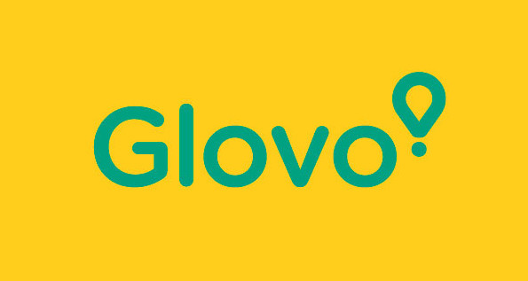
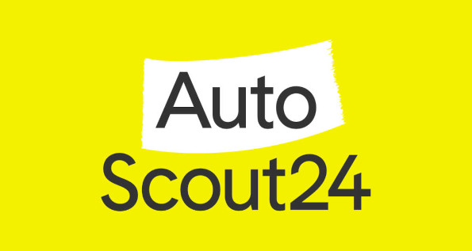
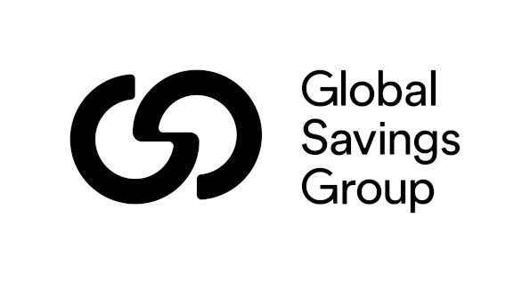
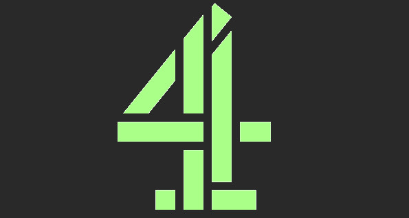
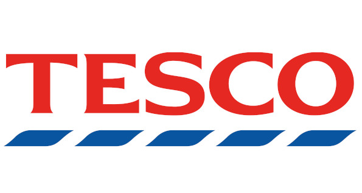
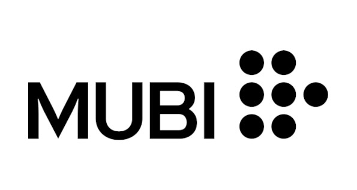

Benjamin
Augustin
- Call
- Web
- Home
- +44 7572 032293
- benjamin.augustin@gmail.com
- www.dorvaryn.dev
- London, UK
Tech leader with a people first approach to leadership and focus on Developer Experience (DevEx). Driven by the values of Exploration, Openness, and Care, I have spent the last 5 years of my career dedicated to DevEx and leadership, particularly in supporting and empowering mobile engineers. Using my 10 years of experience as a mobile engineer and leadership experience enables me to bridge the gap between technical excellence and exceptional user experiences. Currently focusing on leadership, DevOps, and consulting roles, I leverage my expertise to drive organisational success.
Experience
-
 Scaled the mobile engineering team from 8 to 80 engineers, creating mobile platform support and enabling efficient workflows. Implemented automated releases, observability platforms, cloud builds, remote caching, and more.Case Study
Key Themes:
Scaling Mobile Teams • Mobile-Centred DevOps • Continuous Deployment • Mobile Platform Teams -
 Conducted a 6-week consultancy, including stakeholder interviews, code reviews, and process analysis. Developed strategies to enhance the volume and quality of mobile team outputs.
-
 Delivered a 2-week consultancy to identify the best cross-platform mobile technology for them in this context, enhancing operational efficiency through curated interviews and solution analysis.
-
Led the Android development team for the greenfield relaunch of The Times Digital Experience. Results included a significant increase in articles read per visit, unique visitors, and Net Promoter Score.Case Study
Key Themes:
Frontend Android engineering • Product Strategy • Product Design • Agile Delivery -
 Developed Android and Chromecast experiences with native video playback supporting DRM, and seamless content-ad transitions.
-
 Worked on projects including the Hudl Tablet shopping experience, Hudl 2 AOSP modifications, and child-safe application development. Conducted R&D for a mobile till/payment system using Hudl 2 tablet and Bluetooth card reader.Case Study
Key Themes:
Product Discovery • Frontend Engineering • Agile Delivery • Product Design -
 Movie streaming application developement. User experience across mobile, tablet and TV
Academics and Training
Key Themes:
People first Leadership • Introspection • Driving with values • Coaching Multi-profession computer engineering courses. Covering all areas of information technology applications (industry, management and science), with emphasis on engineering activities, modelling and integration of complex systems.
Multi-profession computer engineering courses. Covering all areas of information technology applications (industry, management and science), with emphasis on engineering activities, modelling and integration of complex systems.
Activities and societies:
Vice President of the Comics Library Club since 2010, member since 2009.Skills
- Team Leadership and Coaching
- Kotlin/Java
- Android
- Docker
- AWS
- Linux
Hobbies
Lover of storytelling in all its forms from graphic novels to musicals. I enjoy well crafted stories and the impact they can have on people.
French/European style Bande Dessinée has a special place in my heart. I was part of an association during University and helped organise a yearly convention with Authors coming to showcase their latest creations
When I want to play around with tech, I enjoy tinkering with my own self-hosted services. I have my own server running and regularly experiment with various means to avoid relying on the Tech Giants solutions.